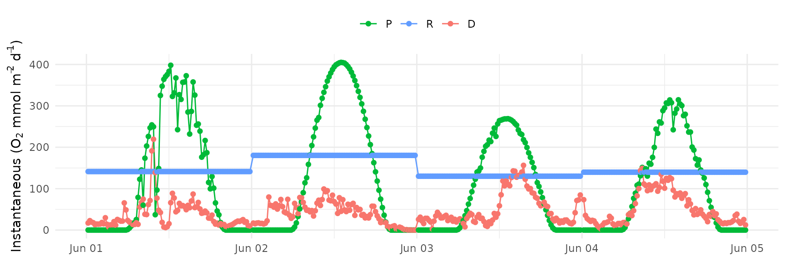
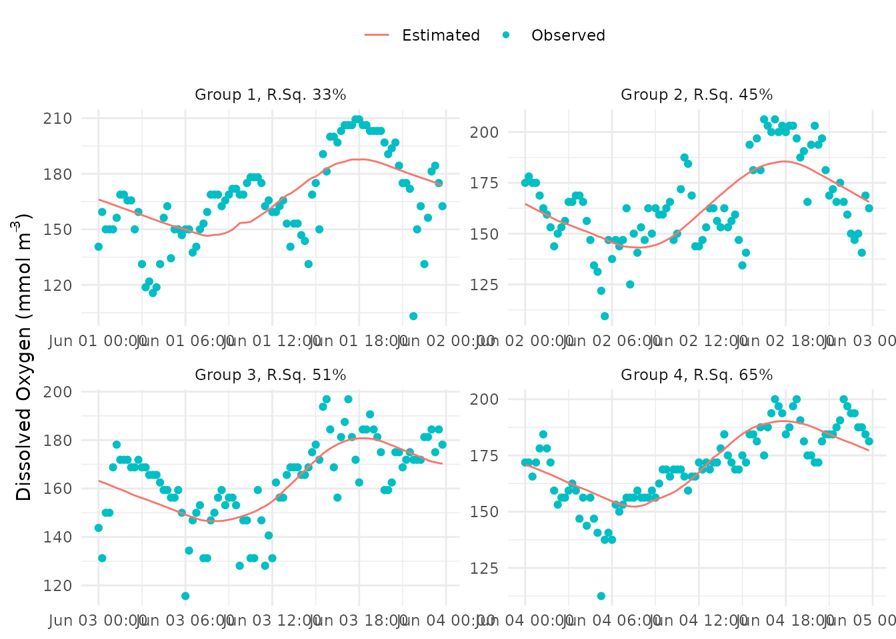
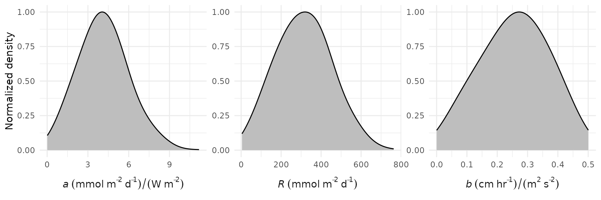
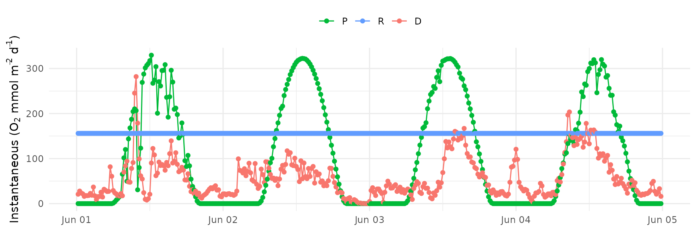
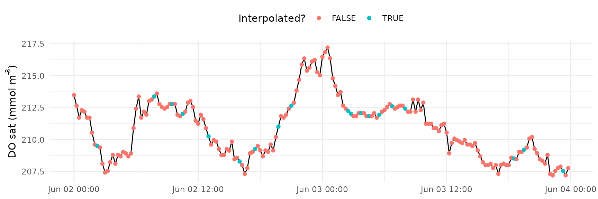
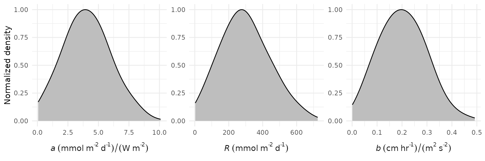
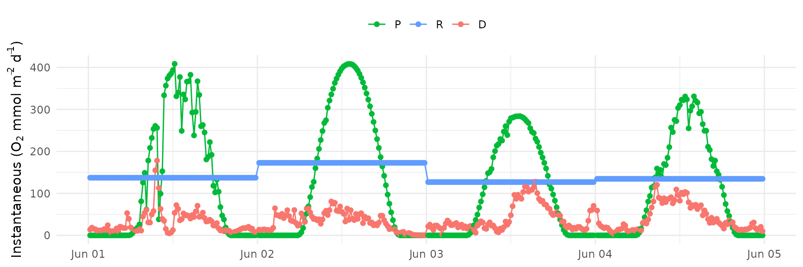

Installation
This vignette provides an overview of the theory and use of the the Estuarine BAyesian Single-station Estimation (EBASE) R package for ecosystem metabolism. Use the following to install the package from R-Universe. The JAGS software must also be installed to use this package. Follow the instructions in the link to download and install the JAGS version appropriate for your operating system.
# Install EBASE in R:
install.packages('EBASE', repos = c('https://fawda123.r-universe.dev', 'https://cloud.r-project.org'))Load the package after installation to use the functions.
Usage
An example file called exdat() is included with the
package that demonstrates the required time series format to use the
functions. It includes nearly a year of continuously monitored water
quality and meteorological data at the Apalachicola National Estuarine
Research Reserve. The required data include a date and time vector
(DateTimeStamp), dissolved oxygen (mg/L,
DO_obs) , water temperature (C, Temp),
salinity (psu, Sal), PAR (W/m2, PAR), and wind
speed (m/s, WSpd). The time step should be consistent
throughout the dataset and is indicated as an argument to the
ebase() function (see below). The exdat()
dataset can be viewed at any time after the package is loaded and is
used in the examples in the help files:
head(exdat)
#> DateTimeStamp DO_obs Temp Sal PAR WSpd
#> 1 2012-02-23 00:00:00 8.8 16.4 23.0 0 3.6
#> 2 2012-02-23 00:15:00 8.8 16.4 22.8 0 3.5
#> 3 2012-02-23 00:30:00 8.8 16.4 22.7 0 3.6
#> 4 2012-02-23 00:45:00 8.8 16.4 22.9 0 4.2
#> 5 2012-02-23 01:00:00 8.7 16.4 22.7 0 3.6
#> 6 2012-02-23 01:15:00 8.5 16.4 23.4 0 4.1The core function to estimate metabolism is ebase(). The
metabolic estimates are based on a mass balance equation in Grace et al. (2015) with the gas exchange
estimate from Wanninkhof (2014). It is
similar to that provided by the BASEmetab R package at https://github.com/dgiling/BASEmetab, with modifications
to estimate different parameters optimized by the JAGS model:
\[ Z\frac{dC_d}{dt} = aPAR - R - bU_{10}^2\left(\frac{Sc}{600} \right)^{-0.5} \left(C_{Sat} - C_d \right ) \]
More simply:
\[ Z\frac{dC_d}{dt} = P - R - D \]
The metabolic estimates are defined by the change in dissolved oxygen over the time step \(\frac{dC_d}{dt}\), where gross production is provided by \(aPAR\), respiration is provided by \(R\), and gas exchange is provided by the remainder. Required inputs for the equation are dissolved oxygen concentration as \(C_d\), solar radiation as \(PAR\), water column depth as \(Z\) (meters), and wind speed as \(U\). Other inputs for the schmidt number \(Sc\) and dissolved oxygen at saturation \(C_{Sat}\) are calculated from the observed data. The remaining three parameters \(a\), \(R\), and \(b\) are estimated by likelihood given the observed data with the JAGS model using prior distributions shown in the model file. At each time step, the change in oxygen concentration between time steps is calculated from the equation using model inputs and parameter guesses, and then a finite difference approximation is used to estimate modeled oxygen concentration. The first modeled value starts at the mean oxygen concentration for all measurements in the optimization period. The estimated concentration is also returned at each time step, which can be compared to observed as one measure of model performance.
The following shows how to use the ebase() function with
a subset of four days from the exdat() example dataset.
Running the model on the entire year will take a few minutes, so a
subset is used:
library(dplyr)
library(lubridate)
# subset four days in June
dat <- exdat %>%
filter(month(exdat$DateTimeStamp) == 6 & day(exdat$DateTimeStamp) %in% 1:4)
head(dat)
#> DateTimeStamp DO_obs Temp Sal PAR WSpd
#> 1 2012-06-01 00:00:00 4.5 29.5 23.0 0 2.0
#> 2 2012-06-01 00:15:00 5.1 29.5 23.3 0 2.3
#> 3 2012-06-01 00:30:00 4.8 29.5 23.4 0 2.1
#> 4 2012-06-01 00:45:00 4.8 29.5 23.3 0 2.0
#> 5 2012-06-01 01:00:00 4.8 29.5 23.1 0 1.7
#> 6 2012-06-01 01:15:00 5.0 29.5 24.0 0 1.8Also note that any “dangling” observations at the start or end of the time series that do not include an entire day are removed from the input data prior to estimating metabolism. A warning is returned if these observations are found and removed.
res <- ebase(dat, interval = 900, Z = 1.85, progress = TRUE, n.chains = 2)
head(res)
#> DateTimeStamp Date grp Z DO_obs DO_mod DO_modlo DO_modhi
#> 1 2012-06-01 00:00:00 2012-06-01 1 1.85 140.625 166.1133 166.1122 166.1143
#> 2 2012-06-01 00:15:00 2012-06-01 1 1.85 159.375 165.4136 165.1512 165.6796
#> 3 2012-06-01 00:30:00 2012-06-01 1 1.85 150.000 164.7459 164.2171 165.2783
#> 4 2012-06-01 00:45:00 2012-06-01 1 1.85 150.000 164.0582 163.2677 164.8556
#> 5 2012-06-01 01:00:00 2012-06-01 1 1.85 150.000 163.3622 162.3142 164.4218
#> 6 2012-06-01 01:15:00 2012-06-01 1 1.85 156.250 162.6401 161.3214 163.9644
#> dDO converge rsq a alo ahi b blo
#> 1 NA Fine 0.3316977 NA NA NA NA NA
#> 2 -67.17105 Fine 0.3316977 0.8937188 0.5493401 1.23722 0.3099639 0.095399
#> 3 -64.09917 Fine 0.3316977 0.8937188 0.5493401 1.23722 0.3099639 0.095399
#> 4 -66.01785 Fine 0.3316977 0.8937188 0.5493401 1.23722 0.3099639 0.095399
#> 5 -66.81056 Fine 0.3316977 0.8937188 0.5493401 1.23722 0.3099639 0.095399
#> 6 -69.32716 Fine 0.3316977 0.8937188 0.5493401 1.23722 0.3099639 0.095399
#> bhi P Plo Phi R Rlo Rhi D Dlo Dhi
#> 1 NA NA NA NA NA NA NA NA NA NA
#> 2 0.4880948 0 0 0 141.3441 91.81771 189.3398 17.07767 5.256151 26.89177
#> 3 0.4880948 0 0 0 141.3441 91.81771 189.3398 22.76065 7.016575 35.73629
#> 4 0.4880948 0 0 0 141.3441 91.81771 189.3398 19.21109 5.935086 30.23658
#> 5 0.4880948 0 0 0 141.3441 91.81771 189.3398 17.74458 5.472469 28.00020
#> 6 0.4880948 0 0 0 141.3441 91.81771 189.3398 13.08887 4.054759 20.68591The results are returned as a data frame with instantaneous metabolic
estimates for areal gross production (O2 mmol/m2/d, P or
\(aPAR\) from above as volumetric),
respiration (O2 mmol/m2/d, R from above as volumetric), and
gas exchange (O2 mmol/m2/d, D or the remainder of the
equation from above as volumetric). Additional parameters estimated by
the model that are returned include a and b as
shown in the above equation. The a parameter is a constant
that represents the primary production per quantum of light with units
of (mmol/m2/d)/(W/m2) and is used to estimate gross production (Grace et al. 2015). The b
parameter is a constant used to estimate gas exchange in (cm/hr)/(m2/s2)
(provided as 0.251 in eqn. 4 in Wanninkhof
(2014)).
A plot of the results can be made with ebase_plot().
ebase_plot(res)
The daily averages can also be plotted by using
instantaneous = FALSE.
ebase_plot(res, instantaneous = FALSE)Execution time of the model can also be reduced by using multiple processors. This is done using doParrallel package and registering a parallel backend as below.
# setup parallel backend
library(doParallel)
cl <- makeCluster(2)
registerDoParallel(cl)
res <- ebase(dat, interval = 900, Z = 1.85, progress = TRUE, n.chains = 2)
stopCluster(cl)Model fit can be assessed using the converge and
rsq columns from the returned results. The values in these
columns apply to each group in the grp column as specified
with the ndays argument. The converge column
indicates "Check convergence" or "Fine" if the
JAGS estimate converged at that iteration (repeated across rows for the
group). The n.chains argument can be increased if
convergence is not achieved. Similarly, the rsq column
shows the r-squared values of the linear fit between the modeled and
observed dissolved oxygen (repeated across rows for the group).
The model fit can also be assessed by comparing the observed and
modeled values for dissolved oxygen with the fit_plot()
function. Estimated values are shown as line and observed values are
shown as points.
fit_plot(res)
The comparison can also be separated by group with
bygroup = TRUE based on the value for the
ndays argument passed to ebase(). The
r-squared value of the fit between modeled and observed dissolved oxygen
is also shown in the facet label for the group.
fit_plot(res, bygroup = TRUE)
A scatterplot showing modeled versus observed dissolved oxygen can
also be returned by setting scatter = TRUE.
fit_plot(res, bygroup = TRUE, scatter = TRUE)
The prior distributions for the \(a\), \(R\), and \(b\) parameters are defined in the model
file included with the package as normal Gaussian distributions with
mean and standard deviations provided by the aprior,
rprior, and bprior arguments in
ebase(). The location of the model file can be viewed as
follows.
system.file('ebase_model.txt', package = 'EBASE')The default values for the priors were chosen based on the ability of
EBASE to reproduce known parameters from a forward metabolism model. An
additional constraint is that all the prior distributions are truncated
to be positive values as required by the core metabolism equation above.
The upper limit for \(b\) is also set
as twice the default value of the mean in the bprior
argument. Units for each parameter are (mmol/m2/d)/(W/m2) for \(a\), mmol/m2/d for \(R\), and (cm/hr)/(m2/s2) for \(b\).
The prior distributions can be viewed with the
prior_plot() function. No changes are needed to the default
arguments for this function if the default arguments are used for
ebase(). The density curves are normalized such that the
peak value is always equal to 1.

95% credible intervals for a, R (as areal),
and b are also returned with the output from
ebase() in the corresponding columns alo,
ahi, blo, bhi, Rlo,
and Rhi, for the 2.5th and 97.5th percentile estimates for
each parameter, respectively. These values indicate the interval within
which there is a 95% probability that the true parameter is in this
range and is a representation of the posterior distributions for each
parameter. Note that all values for these parameters are repeated across
rows, although only one estimate for each is returned based on the
number of days defined by ndays.
The credible intervals can be plotted with the
credible_plot() function.
credible_plot(res)
The credible intervals can also be retrieved as a data frame using
credible_prep(). This function is provided as a convenience
to parse the results from ebase().
credible_prep(res)
#> # A tibble: 12 × 6
#> # Groups: grp [4]
#> Date grp var mean lo hi
#> <date> <dbl> <fct> <dbl> <dbl> <dbl>
#> 1 2012-06-01 1 a 0.894 0.549 1.24
#> 2 2012-06-01 1 R 141. 91.8 189.
#> 3 2012-06-01 1 b 0.310 0.0954 0.488
#> 4 2012-06-02 2 a 0.929 0.705 1.18
#> 5 2012-06-02 2 R 180. 133. 229.
#> 6 2012-06-02 2 b 0.307 0.0927 0.484
#> 7 2012-06-03 3 a 0.617 0.410 0.833
#> 8 2012-06-03 3 R 130. 98.5 161.
#> 9 2012-06-03 3 b 0.321 0.113 0.490
#> 10 2012-06-04 4 a 0.728 0.513 0.951
#> 11 2012-06-04 4 R 140. 107. 171.
#> 12 2012-06-04 4 b 0.280 0.0772 0.473Changing the default arguments
Equation optimization length
The ndays argument in ebase() defines the
model optimization period as the number of days that are used for
optimizing the above mass balance equation. By default, this is done
each day, i.e., ndays = 1 such that a loop is used that
applies the model equation to observations within each day, evaluated
iteratively from the first observation in a day to the last. Individual
parameter estimates for a, R, and
b are then returned for each day. However, more days can be
used to estimate the unknown parameters, such that the loop can be
evaluated for every ndays specified by the argument. The
ndays argument will separate the input data into groups of
consecutive days, where each group has a total number of days equal to
ndays. The final block may not include the complete number
of days specified by ndays if the number of unique dates in
the input data includes a remainder when divided by ndays,
e.g., if seven days are in the input data and ndays = 5,
there will be two groups where the first has five days and the second
has two days. The output data from ebase includes a column
that specifies the grouping that was used based on
ndays.
Here, the number of days used to optimize the equation is set to all days in the input data.
cl <- makeCluster(2)
registerDoParallel(cl)
res <- ebase(dat, interval = 900, Z = 1.85, progress = TRUE, n.chains = 2, ndays = 4)
stopCluster(cl)And the resulting plot:
ebase_plot(res, instantaneous = TRUE)
And the fit of observed and modeled dissolved oxygen (note the unbroken line for all days estimated together):
fit_plot(res)
Starting value
The doave argument can be used to define which dissolved
oxygen value is used as the starting point in the Bayesian estimation
for the optimization period. The default setting
(doave = TRUE) will use the average of all the dissolved
oxygen values in the optimization period defined by ndays.
For example, the average of all dissolved oxygen values in each 24 hour
period will be used if doave = TRUE and
ndays = 1. The first dissolved oxygen observation of the
time series in the optimization period will be used as the starting
point if doave = F. In this case, the simulated dissolved
oxygen time series will always start at the first observed dissolved
oxygen value for each optimization period.
The default setting uses the average observed dissolved oxygen in
each optimization period as the starting value. Below,
doave = FALSE is used to set the first observed dissolved
oxygen as the starting value.
cl <- makeCluster(2)
registerDoParallel(cl)
res <- ebase(dat, interval = 900, Z = 1.85, progress = TRUE, n.chains = 2, ndays = 1, doave = F)
stopCluster(cl)
fit_plot(res)Missing values
Missing values in the input data for the specified time step in the
interval argument to ebase() must be
interpolated prior to estimating metabolism. It is the responsibility of
the user to verify that these interpolated values are not wildly
inaccurate. Missing values are linearly interpolated between non-missing
values at the time step specified by the value in interval.
This works well for small gaps, but can easily create inaccurate values
at gaps larger than a few hours.
As an example, the dat object above is subset to 90% of
its observations.
set.seed(222)
dat2 <- dat %>%
slice_sample(prop = 0.9) %>%
arrange(DateTimeStamp)
head(dat2)
#> DateTimeStamp DO_obs Temp Sal PAR WSpd
#> 1 2012-06-01 00:00:00 4.5 29.5 23.0 0 2.0
#> 2 2012-06-01 00:30:00 4.8 29.5 23.4 0 2.1
#> 3 2012-06-01 01:00:00 4.8 29.5 23.1 0 1.7
#> 4 2012-06-01 01:30:00 5.4 29.6 24.9 0 1.8
#> 5 2012-06-01 01:45:00 5.4 29.6 24.6 0 1.8
#> 6 2012-06-01 02:00:00 5.3 29.6 24.8 0 2.0The ebase_prep() function is used internally to
ebase to prepare the data for the metabolism calculations.
This function interpolates the missing data and returns a column
isinterp that specifies TRUE or
FALSE if a value is interpolated.
dat2interp <- ebase_prep(dat2, Z = 1.85, interval = 900)
head(dat2interp)
#> Date DateTimeStamp isinterp DO_obs DO_sat Z Temp Sal PAR
#> 1 2012-06-02 2012-06-02 00:00:00 FALSE 323.7500 394.9605 1.85 28.8 21.8 0
#> 2 2012-06-02 2012-06-02 00:15:00 FALSE 329.5313 393.4299 1.85 28.8 22.5 0
#> 3 2012-06-02 2012-06-02 00:30:00 FALSE 323.7500 391.6884 1.85 28.9 23.0 0
#> 4 2012-06-02 2012-06-02 00:45:00 FALSE 323.7500 392.7755 1.85 28.9 22.5 0
#> 5 2012-06-02 2012-06-02 01:00:00 FALSE 312.1875 392.5577 1.85 29.0 22.3 0
#> 6 2012-06-02 2012-06-02 01:15:00 FALSE 300.6250 391.6888 1.85 29.0 22.7 0
#> WSpd sc grp
#> 1 1.9 355.5996 1
#> 2 1.8 356.3840 1
#> 3 1.9 355.2102 1
#> 4 1.9 354.6523 1
#> 5 1.8 352.7068 1
#> 6 1.8 353.1511 1The interpolated values can be visually inspected using the
interp_plot() function.
interp_plot(dat2, Z = 1.85, interval = 900, param = 'DO_sat')
The ebase() function includes the maxinterp
argument to assign NA values to continuously interpolated
rows with length greater than the value defined by
maxinterp. This value is set to 12 hours by default and
applies to the groupings defined by ndays, i.e., any group
with a continuous set of interpolated values where the time is greater
than 12 hours are assigned NA (except Date and
DateTimeStamp). The numeric value passed to
maxinterp is the number of time steps for the input data,
e.g., 48 would be 12 hours if the time step is 900 seconds.
Changing priors
If the default values prior distributions are changed for
ebase(), the prior_plot() function can be used
to assess how changing characteristics of the prior distributions could
influence the resulting parameter estimates and their posterior
distributions (e.g., as shown with credible_plot()).
Here, the prior distribution for the \(b\) parameter is changed to have a mean of 0.4 and standard deviation of 1.
prior_plot(bprior = c(0.2, 0.1))
The same change to the prior distribution for the \(b\) parameter is applied to
ebase()
cl <- makeCluster(2)
registerDoParallel(cl)
res <- ebase(dat, interval = 900, Z = 1.85, progress = TRUE, n.chains = 2, bprior = c(0.2, 0.1))
stopCluster(cl)
ebase_plot(res, instantaneous = TRUE)
The credible_plot() function can be used to assess how
changing the prior distributions has an influence on the posterior
distributions of the parameters.
credible_plot(res)